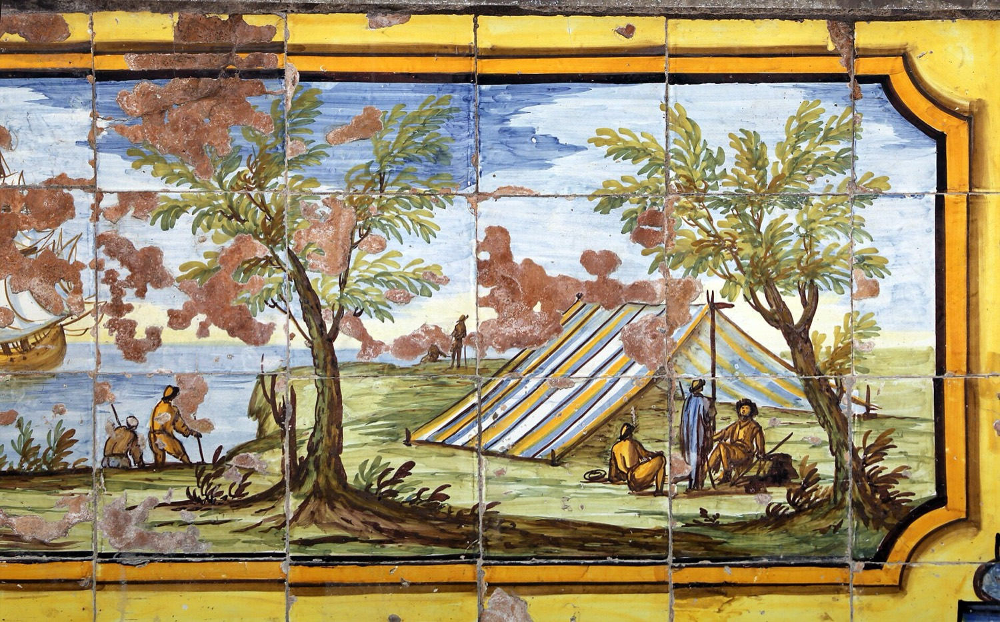

Identità visiva.
Guida al marchio di Nozze in Ordine. Versione 1.0, 23 ottobre 2026. Cosa abbiamo deciso, perché, e come usarlo senza doverci chiedere ogni volta.
Le riggiole, posate in ordine.
Nel chiostro maiolicato di Santa Chiara, a Napoli, ogni tassello dipinto sta al suo posto. In napoletano si chiamano riggiole. Un matrimonio si organizza allo stesso modo: budget, fornitori, invitati, scadenze, tante tessere piccole che devono stare insieme.
Il marchio e il prodotto lavorano su questa immagine: tessere quadrate, una fuga stretta tra l'una e l'altra, un solo colore forte, un solo carattere. Niente corsivi, fiori, oro o sigilli: è il linguaggio di quasi tutti i servizi per matrimoni, e non dice nulla di noi.
Cosa abbiamo guardato
Le riggiole del chiostro di Santa Chiara (1739-42) sono descritte dalle fonti con celeste, giallo e verde, in linea con cielo, vite e limoni del giardino; la ceramica di Vietri sul Mare con blu, giallo, verde e rosso. Da qui i quattro smalti del prodotto. Le tendenze 2026 della cartoleria nuziale spostano l'attenzione su tipografia, date in grande e sistemi coerenti: ci siamo mossi in quella direzione, senza ornamenti.
Fonti: FAI, Complesso monumentale di Santa Chiara · Comune di Napoli · italia.it, Vietri sul Mare · StationeryHQ, tendenze 2026 (fonte di un fornitore di stampa: da leggere con cautela). Le date del chiostro non coincidono del tutto tra le fonti.
Prima e dopo
| Prima | Ora |
|---|---|
| Corsivo Pinyon Script | Un solo carattere, Hanken Grotesk |
| Bodoni Moda per i titoli | Titoli in semibold stretto |
| Filetti oro e sigillo | La fuga di 4px, niente linee |
| Icone in cerchio | Frammenti reali del prodotto |
| Scheda cruscotto con ombra | Pavimento di tessere, senza ombre |
| Bordeaux e avorio | Aglianico e calce |
Quattro riggiole e un anello.
Il marchio è un quadrato di quattro tessere, separate da una fuga di due unità, con un anello tagliato al centro e un sasso pieno dentro. Si legge come una tessera posata, come un anello, come un'O di ordine. Quando il sito si apre, le quattro tessere ruotano e si mettono al loro posto: è l'unico movimento del marchio.
Spazio di rispetto: metà dell'altezza del marchio su ogni lato.
Misure minime: marchio 20 px, lockup 120 px di larghezza.
Colori: aglianico su calce o su bianco; bianco su aglianico o su inchiostro; inchiostro solo per stampa monocromatica.
File
- lockup.svg, ink, bianco
- mark.svg, ink, bianco
- wordmark.svg, ink, bianco
- mark-scrambled.svg (solo per l'animazione)
- favicon.svg, avatar.png, og.png



Su inchiostroNon farlo
Un fondo, un inchiostro, un colore forte.
L'aglianico è il vino rosso scuro della Campania, e il bordeaux che il progetto aveva già scelto. Lo teniamo come unico colore d'accento: pulsanti, numeri importanti, la tessera "in corso" e le sezioni a campo pieno. Il fondo non è più avorio ma una calce neutra, perché l'avorio con il bordeaux è la coppia più usata del settore.
- Calce#F1F0ECFondo della pagina
- Inchiostro#1E1417Testo e totali
- Aglianico#6E1B2FAccento: azione e campo pieno
- Tessera#F7F7F5Tessere non ancora posate
- Tessera posata#E7E6E2Tessere già passate, righe
- Fuga#D8D5CDLa fuga tra le tessere
- Testo secondario#4B4044Note e didascalie
- Bianco#FFFFFFTesto su aglianico e inchiostro
Gli smalti: solo stati del prodotto
- Verde vite#5E8C3AConfermato, pagato
- Limone#E7B72FIn corso
- Celeste#7EA4D6Da venire
- Cotto#C4694DRifiutato, in ritardo
70% calce e tessere18% inchiostro10% aglianico2% smalti
Contrasto (WCAG 2)
| Coppia | Rapporto | Uso |
|---|---|---|
| Inchiostro su calce | 15,8 : 1 | testo |
| Testo secondario su calce | 8,7 : 1 | note, didascalie |
| Aglianico su calce | 9,9 : 1 | numeri, link, stato attivo |
| Bianco su aglianico | 11,3 : 1 | pulsanti, sezioni a campo pieno |
| Inchiostro su limone | 9,6 : 1 | solo se serve testo sullo smalto |
| Inchiostro su celeste | 7,0 : 1 | solo se serve testo sullo smalto |
| Bianco su inchiostro | 18,0 : 1 | totali, tessera selezionata |
Gli smalti non sono mai colore del testo e non si usano per decorare: ogni colore ha un solo significato, sempre accompagnato da una parola.
Un solo carattere, preciso come un registro.
Hanken Grotesk
400, 500, 600, 700. Licenza SIL Open Font License, quindi ospitabile sul nostro sito. Caratteri senza grazie, cifre lining e tabulari per budget e date: 26.000 €.
Regole: maiuscola solo a inizio frase e nei nomi; mai tutto maiuscolo con spaziatura; mai corsivi decorativi; mai più di due pesi nella stessa schermata. Il carattere predefinito era Switzer: l'abbiamo sostituito perché la licenza Fontshare sull'ospitare i file sul proprio sito non è chiara.
La fuga: quattro pixel tra una tessera e l'altra.
Ogni modulo del sito e del prodotto è una tessera quadrata. Tra due tessere c'è sempre la stessa fuga di 4 px, del colore della malta. Le tessere si distinguono per tono, non per bordi né ombre.
Gli angoli sono vivi, come quelli di una riggiola. Niente gradienti, niente vetro, niente linee sottili. Chi ha già posato (le scadenze passate) usa la tessera posata, più scura; chi deve ancora arrivare usa la tessera chiara; l'unica a campo pieno in aglianico è quella in corso.
Tessere già posate, tessera in corso, tessere da venire.
Stati nel prodotto
Riggiole vere, non coppie in posa.
Le immagini mostrano il mondo in cui lavoriamo: le riggiole di Napoli e della Campania, i chiostri, la luce naturale. Mai foto di coppie, mani con anelli, bokeh o corone di fiori. Un'immagine trovata non è mai presentata come nostra, né come un nostro cliente.
Colore naturale, nessun filtro, angoli vivi. Tre proporzioni: 3:2 per le foto grandi, 4:5 per le laterali, 2,8:1 per le fasce. Ogni didascalia dice che cosa si vede. Il credito sta in fondo alla pagina.



Le tessere si posano.
Il movimento serve a mostrare l'ordine, mai a decorare. Le cose arrivano al loro posto, una dopo l'altra, e poi stanno ferme.
- Ingresso: sale di 28 px con dissolvenza, 700 ms, curva (0,2 · 0,7 · 0,2 · 1), a scaglioni di 60-90 ms. Una sola volta.
- Marchio: le quattro tessere ruotano di 180 gradi e si posano, 900 ms, a scaglioni di 100 ms, solo al caricamento.
- Date: quando cambi la data del sì le tessere si ricalcolano e si ripongono in 500 ms.
- Pulsanti e tessere: si alzano di 2-3 px al passaggio del mouse; la freccia scivola di 4 px.
- Immagini: dissolvenza lenta tra due scatti dello stesso viale (16 s) e un ingrandimento quasi impercettibile (28 s).
- Con "riduci movimento" attivo tutto resta fermo e visibile.
Le quattro tessere si posano al caricamento: la stessa idea del marchio.
Preciso, caldo, senza promesse.
Scriviamo come una persona che mette a posto le cose: frasi corte, parole concrete, nessuna promessa su funzioni o prezzi che non esistono ancora. Alle coppie si dà del voi, alle wedding planner e nei moduli del tu.
Parole da evitare: magico, sogno, perfetto, rivoluzionario, esclusivo. Niente punti esclamativi. Slogan: "Il matrimonio, tutto in ordine." Secondario: "Ogni cosa al suo posto."
Dove si usa.
 Anteprima social, 1200 × 630 (og.png)
Anteprima social, 1200 × 630 (og.png)Firma email: Felice Mondo · Nozze in Ordine · info@nozzeinordine.com · nozzeinordine.com. Solo testo, in inchiostro; il marchio non si inserisce nelle email dei primi contatti, per non farle sembrare una newsletter.
Messaggi di primo contatto: restano scritti a nome di Felice, dal suo profilo, senza grafica.
Token per chi costruisce.
:root {
--ground: #F1F0EC; /* calce */
--ink: #1E1417; /* inchiostro */
--muted: #4B4044;
--accent: #6E1B2F; /* aglianico */
--accent-ink: #FFFFFF;
--tile: #F7F7F5; /* tessera */
--tile-laid: #E7E6E2; /* tessera già posata */
--grout: #D8D5CD; /* fuga */
--verde: #5E8C3A; --limone: #E7B72F; --celeste: #7EA4D6; --cotto: #C4694D; /* smalti: solo stati */
--font: "Hanken Grotesk", "Helvetica Neue", Arial, system-ui, sans-serif;
--joint: 4px; /* la fuga */
}
Gli stessi valori sono in tokens.css e nel foglio di stile del sito.
Note e limiti.
- Questa guida definisce l'aspetto, non il nome. La ricerca su UIBM e TMview non ha trovato risultati, ma non è un parere legale: prima del deposito serve un consulente in proprietà industriale, anche perché il nome è descrittivo.
- La palette cambia rispetto alla decisione "bordeaux e avorio": il bordeaux resta, l'avorio cede a una calce neutra.
- Le foto sono di Sailko, CC BY 3.0, da Wikimedia Commons: il credito è obbligatorio e compare in fondo alle pagine. Non sono immagini di Nozze in Ordine né di suoi clienti.
- Hanken Grotesk è sotto SIL OFL e ospitato sul sito; non serve nessun servizio esterno.
- I dati nei riquadri del sito (budget, preventivi, invitati, eventi, scaletta) sono di esempio e vanno sostituiti o dichiarati tali.
- La riga "Prova a mano: 3 planner e 5 coppie" sul sito riprende gli obiettivi del Piano operativo. Se non vuoi renderli pubblici, si toglie in un punto solo.